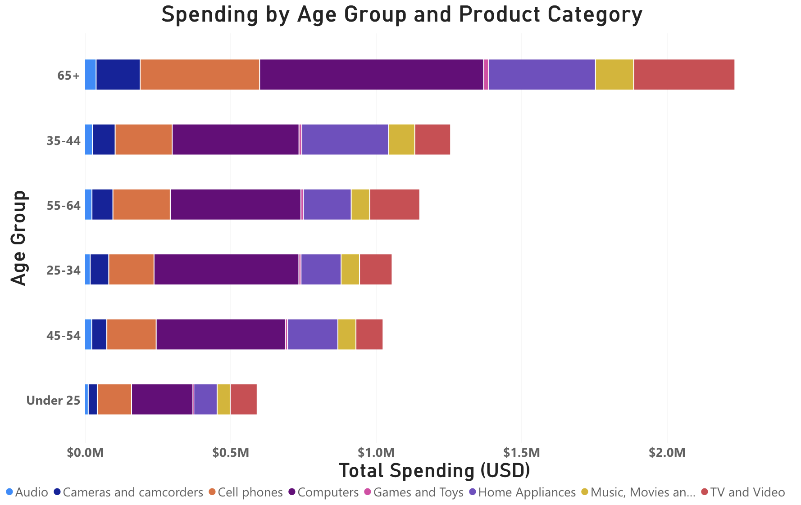

Power BI Sales Data Analysis - Ashton Hatch
Which age groups spend the most, and what product categories do they buy?

This chart displays sales spent by age group and product category. The age groups are on the x-axis. Each bar displays sales by category, and the color variations indicate the amount spent in that product category.
Senior citizens (65 and older) spent the most in total. Over $2 million was spent by this age group. The 35-44 age group spent the second most.
Spending on computers was the highest in all age groups. Under 25 spent the lowest in total. This data can be useful for businesses in terms of identifying which age groups are buying what products.
Previous Page Next Page